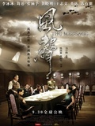
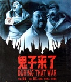
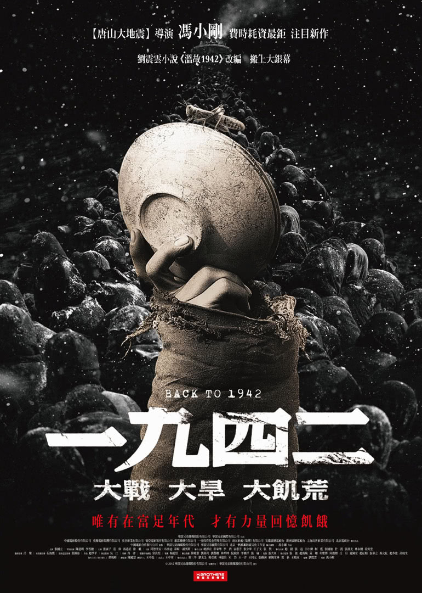
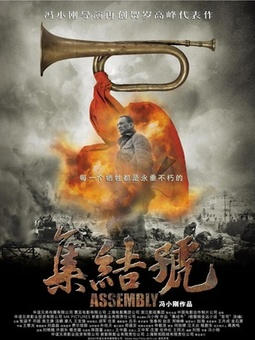

---建国70周年，我们的追逐之路-->经典影视电影
《金陵十三钗》是2011年一部战争史诗电影，根据严歌苓同名小说改编。克里斯蒂安·贝尔、倪妮、佟大为、张歆怡、黄天元和渡部笃郎等联袂出演....

《风声》是根据麦家同名小说改编的中国大陆首部谍战大片，由华谊兄弟出品，冯小刚监制....

《鬼子来了》是一部由华亿影视娱乐有限公司和中国电影合作制片公司联合出品的喜剧战争剧情片。影片由姜文执导....

九四二年，因为一场旱灾，我的故乡河南，发生了吃的问题。大灾之年，战争逼近，他赶着马车.....

《集结号》是2006年华谊兄弟传媒股份有限公司、上海电影集团公司等联合出品的剧情片，由冯小刚执导，刘恒编剧...
《红高粱》是由西安电影制片厂出品的战争文艺片，由张艺谋执导，姜文、巩俐、滕汝骏等主演....